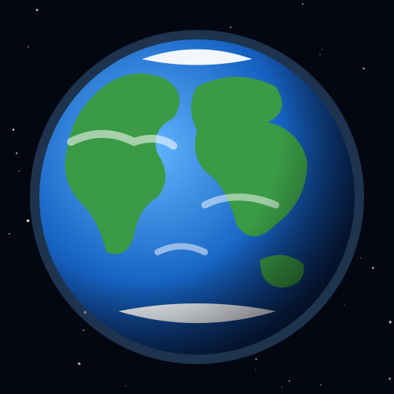
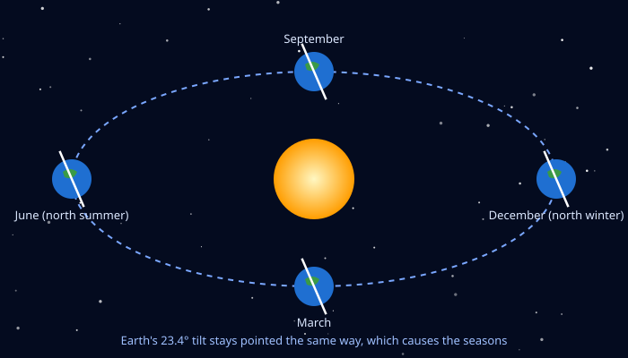

Our Home Planet
Earth is the third planet from the Sun and the largest of the four rocky planets. It is the only place in the universe where we know life exists.
Earth sits in the Sun's "Goldilocks zone": not too hot and not too cold, so water can stay liquid on its surface. Press the button below to watch the planet switch between day and night.

Earth Facts
- Position3rd planet from the Sun, about 150 million km away (1 astronomical unit).
- SizeAbout 12,742 km across, the biggest of the rocky planets.
- DayOne spin takes about 24 hours.
- YearOne trip around the Sun takes 365.25 days, which is why we have leap years.
- Water worldAbout 71% of Earth's surface is covered by water.
- MoonsOne: the Moon.
- TiltEarth's axis is tilted about 23.4°, which gives us seasons.
Day and Night
Earth spins once every 24 hours, so half of the planet is always in daylight and half is always in darkness. The page started in day mode based on the time on your device.
It is daytime: the Sun lights up the oceans and clouds.

Why We Have Seasons
Seasons are not caused by Earth getting closer to the Sun. They happen because Earth is tilted.
In June the Northern Hemisphere leans toward the Sun and gets summer, while the Southern Hemisphere leans away and gets winter. Six months later it's the other way around.